←explanation nuée架空のフレグランスブランドPOINT最初に制作したページです。自分の好みを詰め込もうと、好きな配色やモチーフを集めて組み立てました。おしゃれな空間に仕上げたく、インジケーターバーやナビなど装飾にこだわりました。ページの構成はCanvaで作り、実装はAIにお任せしました。COLORHTMLCSSJavaScriptCanvaClaudeChatGPT 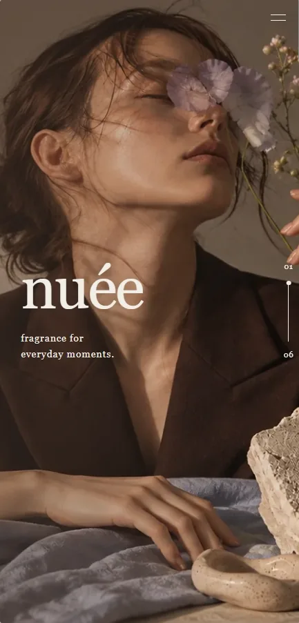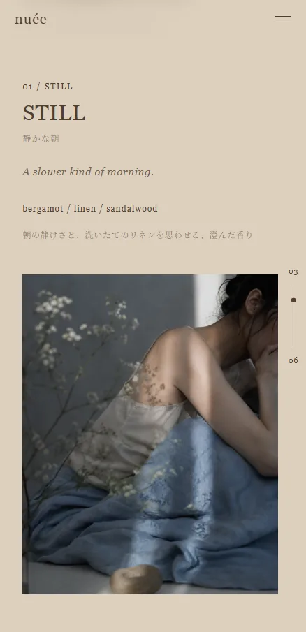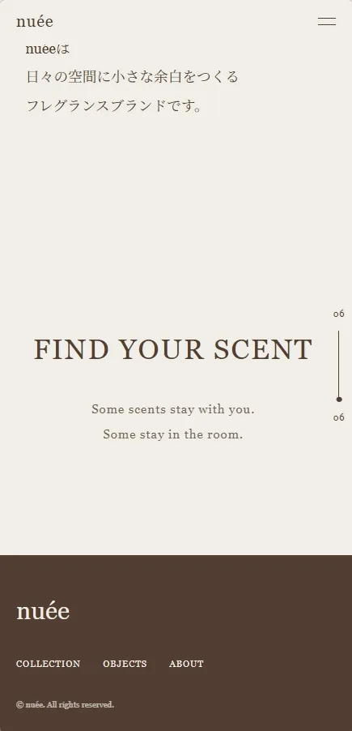 01/05nuée responsive→
←explanation TENO架空のハンドタオルブランドPOINTnuéeとは異なる軽やかさをテーマに制作しました。この作品から、Illustratorで構成を作り、AIに実装してもらう流れになりました。細かな修正や調整は自身で行っています。COLORHTMLCSSJavaScriptIllustratorClaudeChatGPT 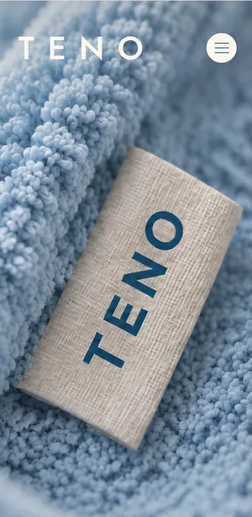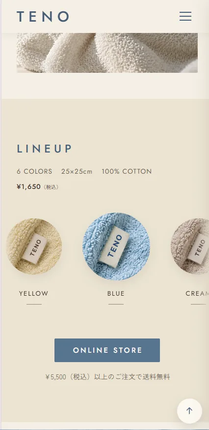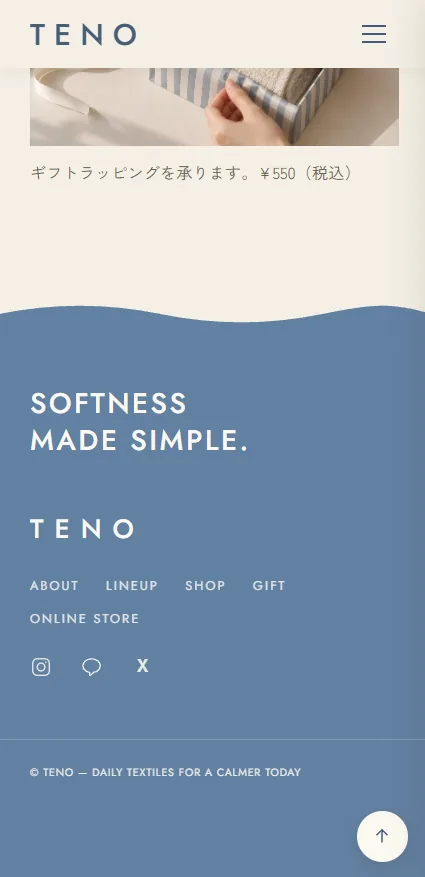 02/05TENO responsive→
←explanation FONCÉ架空の贅沢スイーツブランドPOINTこれまでのカジュアルな雰囲気とは異なるテーマに。1作目のnuéeとブラウンの配色が重なりましたが、異なる方向性のデザインに仕上がったと思います。COLORHTMLCSSJavaScriptIllustratorClaudeChatGPT 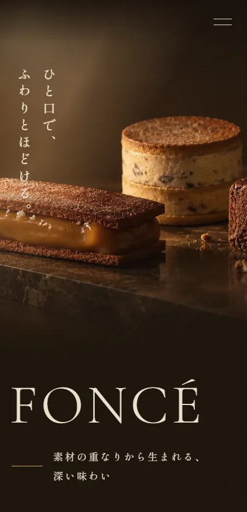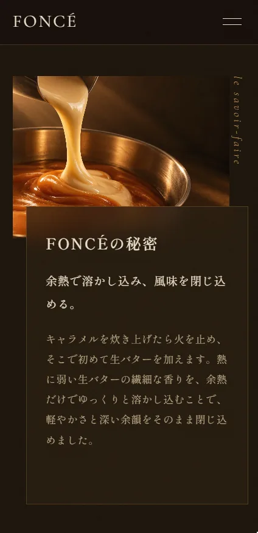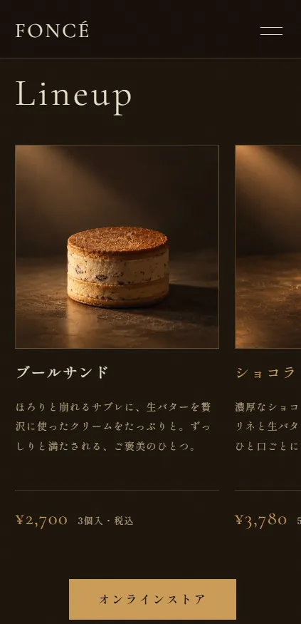 03/05FONCÉ responsive→
←explanation ねこのみどり飼い猫の紹介サイトPOINTモバイルファーストとポップなデザインをテーマに制作しました。STUDIOにも挑戦したく、大部分をSTUDIOで作っています。発表にあたりAIにHTMLへ変換してもらい、アニメーションも追加しました。写真の雰囲気に頼らないページ作りに苦戦しました。サイト内のイラストは自分で描いています。COLORSTUDIOHTMLCSSJavaScriptIllustratorPhotoshopClaude 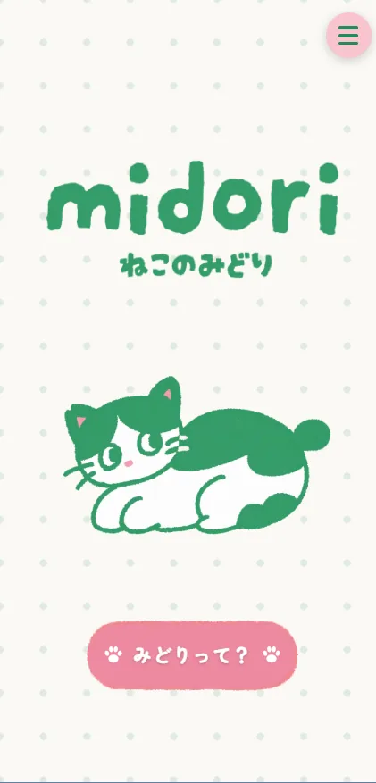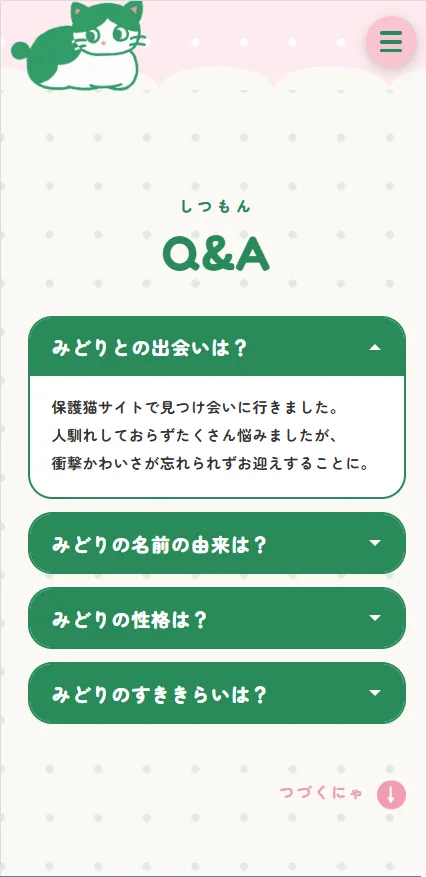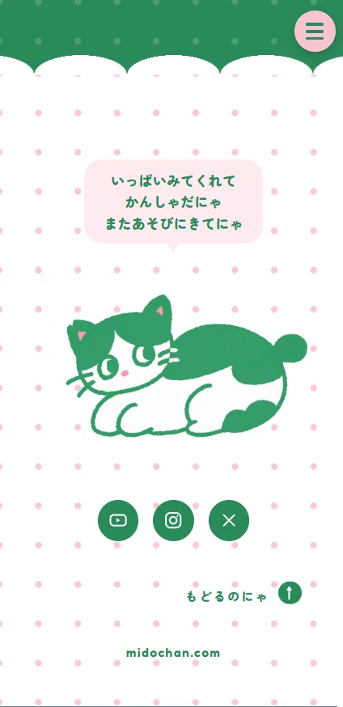 04/05ねこのみどり responsive→
←explanation タイマーアプリ授業と休憩をカウントするWebアプリPOINT生成AIの授業で制作しました。閉鎖的な空間に苦手意識があり、終わりの時間がひと目でわかるこのアプリは安心材料になりました。授業中はピンク、休憩中は水色に自動で切り替わります。背景画像はIllustratorで作成しました。COLORIllustratorClaude 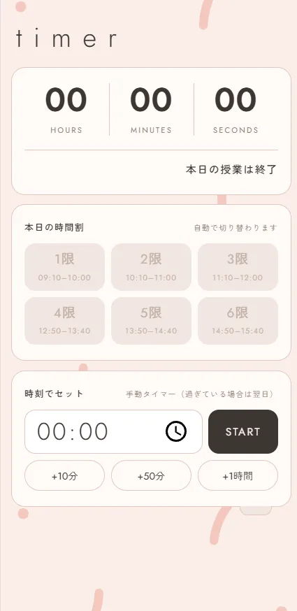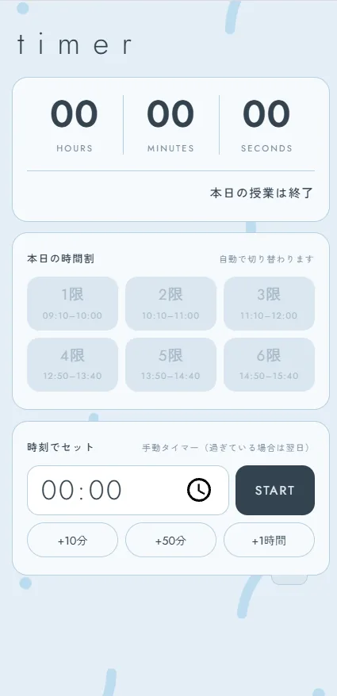 05/05タイマーアプリ responsive→